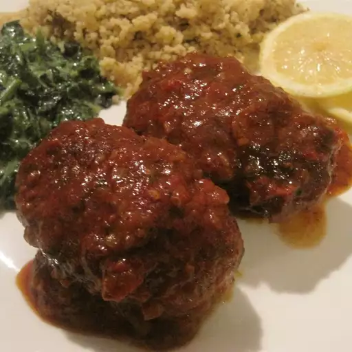

Algerian Kefta

This simple meatball dish is delicious, rich, and fresh.
My Algerian husband taught me it as it's one of his favorites from home.
The tomato sauce can be used for anything, and the flavors can be adjusted.
I like a lot of garlic and pepper. I have found halal hamburger meat to be much leaner and lighter than regular.
You can find it at international food stores and halal butcher shops in bigger cities.
Serve this dish with a French baguette.
Ingredients
- 1 pound lean ground beef
- 4 cloves garlic, minced, divided
- ¼ cup finely chopped onion, divided
- salt and pepper to taste
- 3 roma (plum) tomatoes, diced
- 1 teaspoon dried parsley
- ½ teaspoon ras el hanout (Optional)
- ½ cup water
Steps to cook the Kefta:
- Combine ground beef with 1/2 of the minced garlic and 1 tablespoon chopped onion in a large bowl. Mix with your hands until fully incorporated. Shape meat mixture into 1 1/2-inch oblong patties; you should have 12 to 14 meatballs.
- Heat a large skillet over medium-high heat. Brown patties in batches in the hot skillet until crispy on both sides and no longer pink in the center, about 10 minutes. Set meatballs aside in a rimmed serving dish.
- Reduce heat to medium and stir remaining chopped onion into drippings in the skillet. Season with salt and pepper. Cook, stirring constantly, until onion has softened and turned translucent, about 5 minutes. Stir in remaining garlic and cook for 30 seconds. Stir in Roma tomatoes, dried parsley, and ras el hanout. Pour in water. Cook until tomatoes are soft, about 5 minutes.
- Pour tomato sauce over meatballs to serve.

Editor's Notes:
Halal beef is butchered according to religious law, similar to Kosher beef. You may use regular ground beef in this recipe.
Ras el hanout is a spice blend common throughout North Africa.
It's available from some grocers and specialty purveyors, or you may try this Ras el Hanout recipe
Home